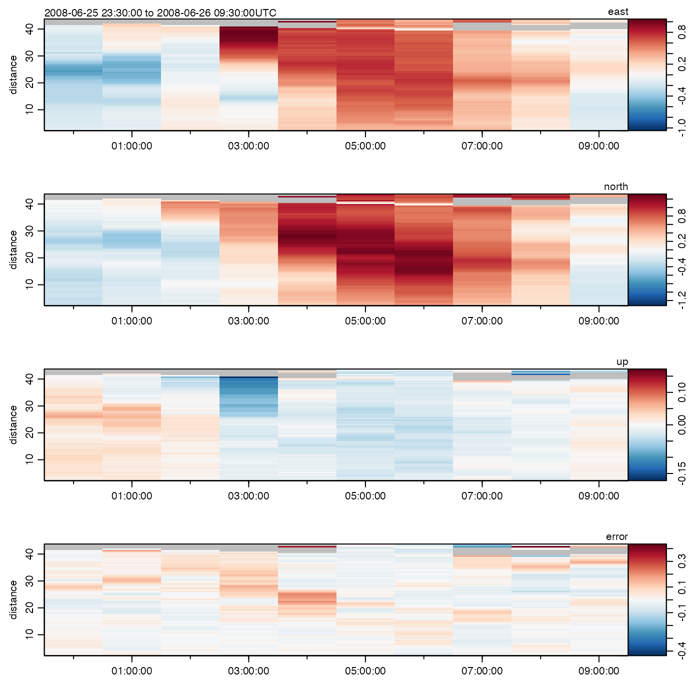

Subset an adp (acoustic Doppler profile) object, in a manner that is function
is somewhat analogous to subset.data.frame().
# S4 method for adp
subset(x, subset, ...)an adp object.
A condition to be applied to the data portion of
x. See ‘Details’.
Ignored.
An adp object.
For any data type,
subsetting can be by time, ensembleNumber, or distance.
These may not be combined, but it is easy to use a string of calls to
carry out combined operations, e.g.
subset(subset(adp,distance<d0), time<t0)
For the special
case of AD2CP data (see read.adp.ad2cp()), it is possible to subset
to the "average" data records with subset="average", to the
"burst" records with subset="burst", or to the "interleavedBurst"
with subset="interleavedBurst"; note that no warning is issued,
if this leaves an object with no useful data.
Other things related to adp data:
[[,adp-method,
[[<-,adp-method,
ad2cpHeaderValue(),
adp-class,
adpConvertRawToNumeric(),
adpEnsembleAverage(),
adpFlagPastBoundary(),
adp_rdi.000,
adp,
as.adp(),
beamName(),
beamToXyzAdpAD2CP(),
beamToXyzAdp(),
beamToXyzAdv(),
beamToXyz(),
beamUnspreadAdp(),
binmapAdp(),
enuToOtherAdp(),
enuToOther(),
handleFlags,adp-method,
is.ad2cp(),
plot,adp-method,
read.adp.ad2cp(),
read.adp.nortek(),
read.adp.rdi(),
read.adp.sontek.serial(),
read.adp.sontek(),
read.adp(),
read.aquadoppHR(),
read.aquadoppProfiler(),
read.aquadopp(),
rotateAboutZ(),
setFlags,adp-method,
subtractBottomVelocity(),
summary,adp-method,
toEnuAdp(),
toEnu(),
velocityStatistics(),
xyzToEnuAdpAD2CP(),
xyzToEnuAdp(),
xyzToEnu()
Other functions that subset oce objects:
subset,adv-method,
subset,amsr-method,
subset,argo-method,
subset,cm-method,
subset,coastline-method,
subset,ctd-method,
subset,echosounder-method,
subset,lobo-method,
subset,met-method,
subset,oce-method,
subset,odf-method,
subset,rsk-method,
subset,sealevel-method,
subset,section-method,
subset,topo-method,
subset,xbt-method
library(oce)
data(adp)
# 1. Look at first part of time series, organized by time
earlyTime <- subset(adp, time < mean(range(adp[['time']])))
plot(earlyTime)
# 2. Look at first ten ensembles (AKA profiles)
en <- adp[["ensembleNumber"]]
firstTen <- subset(adp, ensembleNumber < en[11])
plot(firstTen)
